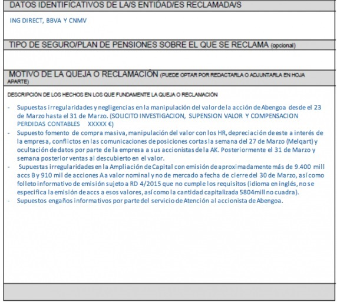

The National Securities Commission (CNMV) is a body attached to the Ministry of Economy and Competitiveness of the Ministry of Economy and Business Support, founded in 1988, in charge of supervising the securities markets in Spain.
The objectives of the CNMV are:
The action of the CNMV as a control body focuses mainly on:
Las normas de conducta para los miembros de la CNMV son los siguientes:
Following the previous thread the great fraud of the hipótecas would leave many people involved in the non-supervision of banking entities and as not the CNMV was one of the favorites. In it, these banks had to borrow from the state in order to be solvent and that the economy did not come down.
Recall that the Spanish financial scheme until a few years ago was of the Ponzi pyramid type, in which those above are nurtured by Spanish investors or savers and in which money does not even exist as such but was lent to entities that made loans for housing or other uses. So if something went wrong in the chain, such as the non-liquidity of those who pay down, as are the mortgaged the whole scheme came down.
Currently this is being corrected and many banks have been put to work. Looking at the victims of this disaster, the first thing we see are the missing savings banks, among them CajaMadrid, reconverted to Bankia and bought by the state . In her we are like presidents and directors to people very connected to political positions of the autonomous communities and the alcaldias. And is that they do not have enough to collect the figures by the state but it is always good a good bite to businessmen or bankers to turn a blind eye.
Although it has taken its toll since Banco Popular had no maneuver options and had to go bankrupt. However, this case is not yet closed and there may also be responsible in the CNMV. A bank with a completely distorted capitalization and with erroneous accounts, as well as many capital increases authorized by the members of the bank, in which the CNMV did not see any crime, nor previous such a disaster when looking at the progression since 2012 could have acted bluntly, removing the bank from the IBEX35 and suspending the value in the worst case until it will be brought to trial and those responsible will be seated. But none of this happened, what finally happened is that Banco Santander took all of Popular's infrastructure for the price of its debt, which for Banco Santander are crumbs. And the big one always eats the little one. And it is that what happened in the past I saw it coming any person who follows the bag without studies in economics, because these people who have so many studies and experience in the sector that is what they would not know . Any person who is in the CNMV and then does not know what happens should not be in it, since those who are is for something.
It would be necessary to investigate what happened between the bank, the ministry of economy that was then chaired by Luis de Guindos and the Banco Popular, with Ron and Saracho at the head.
In this case, the CNMV has acted correctly from my point of view, setting the OPA to the company that will offer the most. However there have been other companies among which are ACS and AENA that have shown interest in the company. Although the latter has not been able to access because it is still a state company since 51% of its shares are state-owned. However, being Spanish ACS against Atlantia, the state has pushed for the ACS company to take over. It is to remember the influence that the president has on the government, since it is part of the select group of banks and companies that manage the rein of our country.
If we look at the following image collected from El Periódico, we observe the two present offers:

After two years of walking adrift in March 2017, Abengoa's financial restructuring agreement was presented. Prior to the transaction, the main creditors had agreed, such as the Spanish banks, the French Credit Agricole and some other foreign fund. However there was a 3% of creditors who did not approve the agreement and wanted the bankruptcy to partially recover the lost money.
The agreement was intended to remove millions of debt in exchange for refloating the company. For this, the company was going to be stripped of the former owners, as was the Benjumea family, which controlled 51% of the company. This would be carried out through the issuance of new shares that would dilute the former shareholders by 95%. In exchange for the removal, the banks would put as conditions to put Urquijo as president and that the Benjumea family was out of the management body. In addition they would receive half of the totality of the new actions. The company would go from being worth 190M to worth 8M plus the value of the new shares. This dilution would be endorsed by the CNMV, and disseminated by the majority of the media.
Apart from all this, the Benjumea would be accused of misrepresenting the accounts of Abengoa and the high indemnities collected from which they would not finally be judged in exchange for their silence. Which I'll talk about later. It is only possible in Spain that an uncle who sinks a company of almost 20,000 workers receives compensation of 3 million euros as a reward for his disastrous management .
Up to here everything fits, but where was the trap?
The banks that had signed the agreement immediately upon hearing the news would buy back their own shares and the actions of many retailers with the aim of distorting the market. The stock would rise exponentially in a matter of hours to be more than double its previous price, knowing that there would be a dilution with its corresponding correction. Should raise if, since an agreement was reached but accounting that it would be worth 8M € tomorrow what I had to have done is lower to minimum and then adjust the value to the new reality.
This operation fits within the law, what does not fit is that those who bought were entering in turn short against the value and then play down and win in differences since they knew well the entire financial structure and the real problems that had abengoa part of the debt they said they were going to correct, that later it would be known that it was greater than we thought and that above all the net profit and the EBDITA were not what they were two years ago. All this due to the suspension of contracts while it was in pre-contest of creditors.
If we add that the CNMV did not update the short positions on those days so the transparency that is presumed had fallen on deaf ears Remember that two years before the CNMV fined a British bank for having short positions in Abengoa.
That falseness in Abengoa's new accounts in order to catch the unwary is what the CNMV should have accelerated to present in order to legitimize the NORM 9 that they have to comply with. I do not speak of another of equal opportunities in investors, since there were some who had better information than others to operate..
This to this day still has not begun to investigate because it is still in a previous investigation. It is none other than the Benjumea. These gentlemen have recently appeared before the banks for having dropped Abengoa, according to them. Actually I see it with different eyes. They were the ones who made it fall and these what they did was absorb society. In return there would be many favors of each other and now as they do not agree because there is going to be war between one mafia and another.
Apparently all those short positions would have been made from the Santander bank by different English companies that controls with the benefit of the CNMV and after Abengoa, a company that is now under control .

Apparently before those two days the CNMV excuses itself in that before it takes different denominator does not have to communicate, since according to them the next day all those short positions would be closed. On the other hand, the challengers who claimed in their day won the trial. What a strange thing, is not it? The judge agreed with Abengoa that he did not have sufficient capacity to remove him from bankruptcy proceedings and later gave his reason to those who did not sign the agreement because, according to Judge Abengoa, he had enough money to pay these other gentlemen.
What has happened then? that 1 year and a half after the famous trial, Abengoa is worse than ever and because he does not have to pay these gentlemen want to present a new restructuring pact in which they want the new owners of the society, which is composed of many retailers give almost 70% of the company to the famous banks that accepted the restructuring in their day and sold the share they had and in turn lost a lot of money to the current owners. In short, a full-blown theft. And they want it to be approved with the positive vote of the current shareholders, something that will be seen next year but that looks pretty good that it will cost them.
If in his day the judge gave the reason to foreign funds that had claimed for much less in question of irregularities, now with Spanish retailers will not be less and in it already Abengoa will have a new series of objection. In the end, the state will have to leave, as in the case of Bankia, to rescue the company due to the innaction of the CNMV. The CNMV must ensure the minority shareholders in this type of operations such as capital increases or restructurings and more when after one there is another and who knows if one more and in this case has not acted at all .
A part of all this as if it were not enough with the dilution of 95% and the next loss of more than 50%. Recall that before the expansion the company capitalized 190 million with the giant debt it had. Well after two years in which an immense take-out has been applied and the assets have already been sold for a better amount than expected, the price is worth less than 190 million. If we calculate the minimum quotation for Spanish markets, this should never have happened but the CNMV instead of asking the company for explanations, arguing that the free market principle should be respected. bid for any value on any action would enable the window to a new minimum value, the hundredth of a cent causing shares to plummet a new 60%. That according to them they did so that the shares could be negotiated, that is to say, so that the bank Santander could buy cheaper the shares that it lacks since those that it had sold them by value superior to the centimo of euro.
All this has not been investigated yet but the day will come. At the moment you can only wait and send complaints to the ombudsman and the Spanish state because the CNMV is not clean wheat .
In this case we know little at the moment although every day we have more information. The only chain of supermarkets listed in Spain has been the victim of speculative fever. In 2011 it would go public with a value of more than 2,000 million, a figure that some considered to be well above its real value. Although it would reach the 5,000 million arriving at the value at a price of 7 euros per share. This happened just three years ago, specifically at the end of 2014.
How is it possible that a company involved in one of the most stable sectors such as food goes from quoting at that value to trading at a value close to 200 million euros. That is, a dilution of 97%. I still can not explain it to me. Let's go to the facts.
On July 28, 2017 Friedman enters into the shareholding of Dia with 10% of the capital. The value of the company skyrockets to 6 euros on the occasion of the purchase. Since then the value would go into clear distribution by my part of the old shareholders knowing how the company was inside. By January 2018, Friedman would already have absorbed 25% of the company. In February one of the prolegomenos of the debacle of Dia would be announced. Annual results for 2017 would be announced, leaving a loss of 37% of profit . This would make the value go down from 4 euros to 3.5 euros, something reasonable but from here the scares would come. The value would enter a downward spiral that would break and entering in September and that could point to that the value would have made ground and a slow recovery.
In my blog I pointed to that possibility unless I lost 1.80 € . This would be the signal that something bad, very bad could happen and that is what finally happened. Results for the first semester of 2018 pointed to a loss of 88% with respect to the previous year. Leaving losses in the company. The result was not expected and the value fell to 1.25 euros. A fall of almost 50%. This fall was not by itself because of sales, but by the shorts that used among other Goldman & Sachs that would have been thanks to the borrowed shares of Friedman.
Little by little the value would go in free fall, happening of the euro to the 0.80 in a matter of days and arriving to form a species of lateral channel around this, pivoting between the 0.6 € and the 0.9 €. Until today December 11 when it is official news that Dia will no longer be in the IBEX35, news that was known since the value lost 1.8 euros. This has sufficed for those who were short to score more profit as the value has reached 0.35 € today, a new fall of 33% that is a fall of 85% from the threshold of 2 euros .
Below I show the value quote since Friedman will enter the shareholding.

After which, what should the CNMV have done?
After the fall of 42% without reaching completion, once it had fallen 30% have suspended the value of the stock market. There should be a consensus on what is the threshold in the IBEX35 for a fall so that a value can be suspended, to be able to thoroughly investigate why this fall is due to the fact that such large values are suspicious. This would give more prestige to the selective and would make ordinary people rethink to enter the stock market because you could say that there is someone watching over the minority, something that does not happen today.
Not only is it no longer watched over by minority groups, but it is also not watched over by Spanish interests, see Albertis' bid, the possible dissolution of Abengoa or DIA, where a Russian who owns one of the largest supermarket chains, X5, goes to get one of the largest Spanish chains without anyone moving a finger. In addition to keeping it, because it could not happen, if the subsequent management is going to be better than with the Spanish owners. We live in a globalized world, but one thing is to keep paying what is worth and another thing is to give it away .
If we look at the graph we can see how to return to the bearish channel that was quite difficult for the technician to return and it is where it is now.
The case of OHL is still to come and it is that the group registers a devaluation of its shares of more than about 95% from its highs of € 20 in mid-2014. And of 90% from the 5 euros to the 0.5 euros that I mark in the middle of November. This decrease puts it right now in a minimum capitalization of 200 million euros.
The group has a large debt and still selling last year a part of the company as Concessions the benefits are still negative. The group is doomed to close and the day that the support that still maintains in the middle euro the fall will be abrupt. It would be good to intervene the value before any news that produces a fall of more than 50% , although this value is already in the continuum and should not have as much interventionism as the values of the IBEX35.
A value like this should stop trading on the stock market until it has had some recovery from my point of view. This value is much more similar to that of Abengoa because of the size of the group and the sector where it works. However, the discount on their quotation has been much more progressive and has not needed a dilution to fall to its real value but it has been the market itself that has placed it where it is.
This shows that sometimes it is leaving the group to make their own decisions, not like what happened with Abengoa. Even so it is a very dangerous value that will surely give more than one surprise ...
By using this site you agree to our Terms and Conditions. Please Accept these before using the site.
© 2016 - All Rights Reserved - Diseñada por Sergio López Martínez
El sitio se mantiene gracias a la publicidad, por favor Desactiva Adblock para seguir navegando
He desactivado Adblock![[Valid RSS]](https://www.feedvalidator.org/images/valid-rss-rogers.png "Validate my RSS feed")